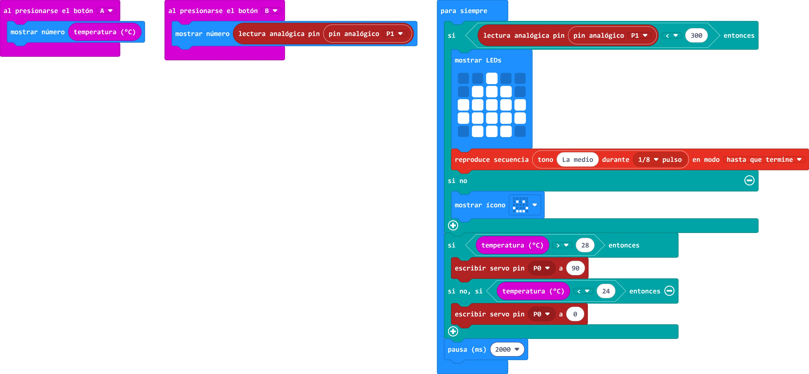
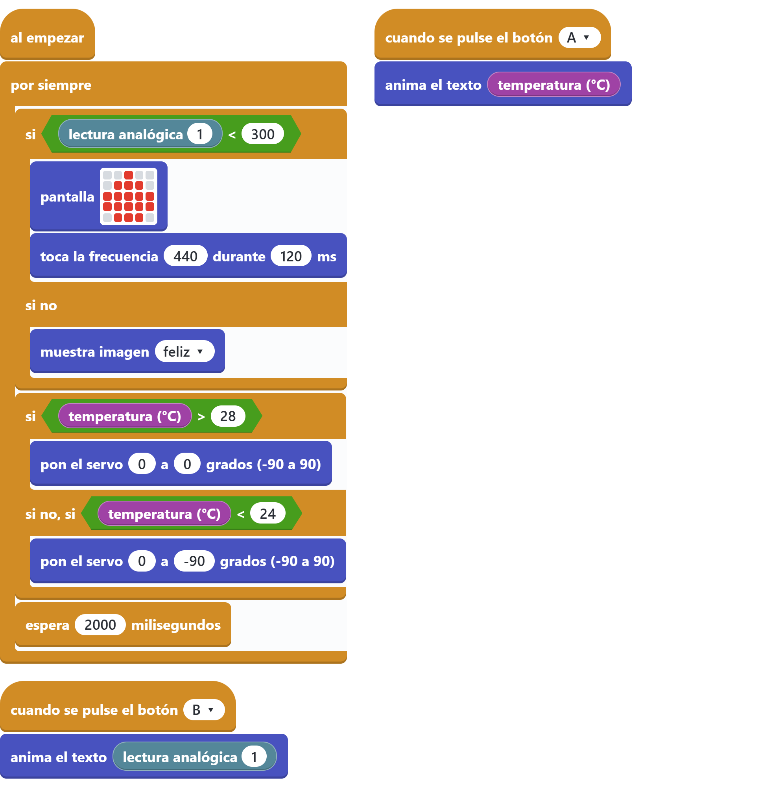

Inicio › Talleres › Proyectos tipo
Invernadero inteligente
Un invernadero de cartón o una caja de plástico transparente que vigila sus plantas: mide la humedad de la tierra, la temperatura y la luz, avisa cuando hay que regar y abre una ventana con un servo si hace demasiado calor.
- 1micro:bitMide la temperatura y lee la humedad. Muestra una gota cuando hay que regar.
- 2Clavos de humedadClavados en la tierra: uno a 3V y el otro a P1.
- 3Servo de la ventanaConectado a P0: abre el techo si hace más de 28 °C.
- 4VentanaSe cierra al bajar de 24 °C.
Necesitas
- micro:bit V2 con portapilas
- Dos clavos para medir la humedad (práctica S1) o un sensor de humedad del suelo
- Microservo SG90
- Cables de cocodrilo
- Caja, cartón y una planta
Conexiones
| Componente | Conexión |
|---|---|
| Clavos de humedad | uno a 3V, el otro a P1 |
| Servo (ventana) | señal a P0, rojo a 3V, marrón a GND |
Paso a paso
- Construye el invernadero y fija la placa en un lugar visible.
- Programa la lectura de la humedad y elige el umbral (con tierra seca y regada).
- Si la tierra está seca, muestra una gota y pita.
- Si la temperatura supera 28 °C, abre la ventana (servo a 90°); si baja de 24 °C, ciérrala.
- Con A, muestra la temperatura; con B, la humedad.
Programa

Probar en el simulador
Es el simulador oficial de MakeCode: pulsa sus botones, toca el logotipo o mueve los controles de los sensores.
Ver y copiar el código JavaScript
basic.forever(function () {
if (pins.analogReadPin(AnalogPin.P1) < 300) {
basic.showLeds(`
. . # . .
. # # # .
# # # # #
# # # # #
. # # # .
`)
music.play(music.tonePlayable(440, music.beat(BeatFraction.Eighth)), music.PlaybackMode.UntilDone)
} else {
basic.showIcon(IconNames.Happy)
}
if (input.temperature() > 28) {
pins.servoWritePin(AnalogPin.P0, 90)
} else if (input.temperature() < 24) {
pins.servoWritePin(AnalogPin.P0, 0)
}
basic.pause(2000)
})
input.onButtonPressed(Button.A, function () {
basic.showNumber(input.temperature())
})
input.onButtonPressed(Button.B, function () {
basic.showNumber(pins.analogReadPin(AnalogPin.P1))
})En MakeCode abre la pestaña JavaScript, borra lo que haya, pega el código y vuelve a Bloques.

Usa las bibliotecas Pantalla LED, Tonos, Sensores básicos, Servomotores. Al abrir el proyecto se cargan solas.
Abrir en MicroBlocks Descargar .ubp
Abre MicroBlocks en Chrome o Edge. Si pregunta si quieres actualizar una biblioteca a una versión nueva, pulsa Sí.
from microbit import *
import music
GOTA = Image("00900:09990:99999:99999:09990")
pin0.set_analog_period(20)
def ventana(grados):
pin0.write_analog(26 + grados * 102 // 180)
ultimo = 0
while True:
if running_time() - ultimo > 2000:
ultimo = running_time()
if pin1.read_analog() < 300:
display.show(GOTA)
music.pitch(440, 120)
else:
display.show(Image.HAPPY)
if temperature() > 28:
ventana(90)
elif temperature() < 24:
ventana(0)
if button_a.was_pressed():
display.scroll(temperature())
if button_b.was_pressed():
display.scroll(pin1.read_analog())Abrir el editor de Python Descargar .py
En el editor de Python pulsa Abrir… y elige el archivo .py, o pega el código.
¿Y si…?
- Envía los datos por radio a una placa en clase.
- Añade una bomba de agua con un relé y una placa de expansión (con ayuda de un adulto).
Para el profesorado
Usamos dos umbrales para la ventana (28 y 24 °C) para que no esté abriéndose y cerrándose sin parar. Es una buena ocasión para hablar de la histéresis, que usan los termostatos reales.
- 10 min: presentación del reto y del material.
- 15 min: diseño en papel (qué mide, qué decide, qué hace).
- 25 min: montaje y programación por fases.
- 10 min: prueba, mejora y presentación al grupo.